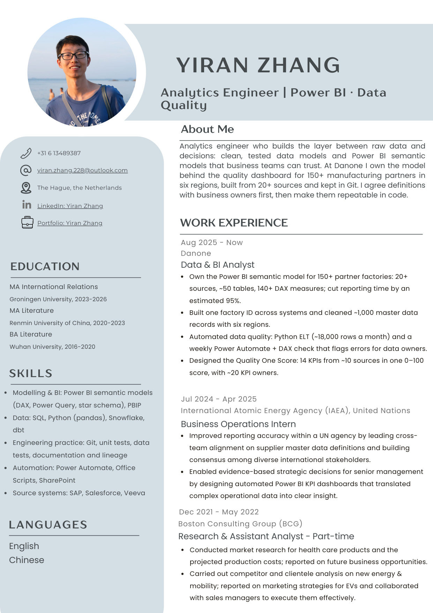

I bring data from many sources into one model, then build dashboards people trust.
Choose a project to see the problem, my role and the result.
One dashboard and one factory ID for 150+ manufacturing partners.
View project → P_02Power Automate and Python turn errors into a fix list.
View project → P_03One global score from about 10 data sources.
View project → P_04I helped document what complaint data means.
View project → P_05A tutorial video, a Copilot agent and AI agent testing.
View project →I build the layer between raw data and decisions: clean, tested data models and Power BI semantic models that business teams can trust.
As a Data & BI Analyst at Danone in the Netherlands, I own the model behind the quality dashboard for 150+ manufacturing partners in six regions, built from 20+ sources and kept in Git.
Before Danone, I worked on supplier master data and Power BI KPI dashboards at the IAEA, a United Nations agency, and on market research as a part-time analyst at Boston Consulting Group.
My background in international relations helps me work with teams across regions and functions.
English · Chinese
Hover for detail, drill through to the records, and move between views with buttons instead of tabs.
Project totals from team work. My role was supporting.
Data & BI Analyst
Business Operations Intern: supplier master data, Power BI KPIs
Research analyst, part-time
MA International Relations · also Renmin University, Wuhan University
